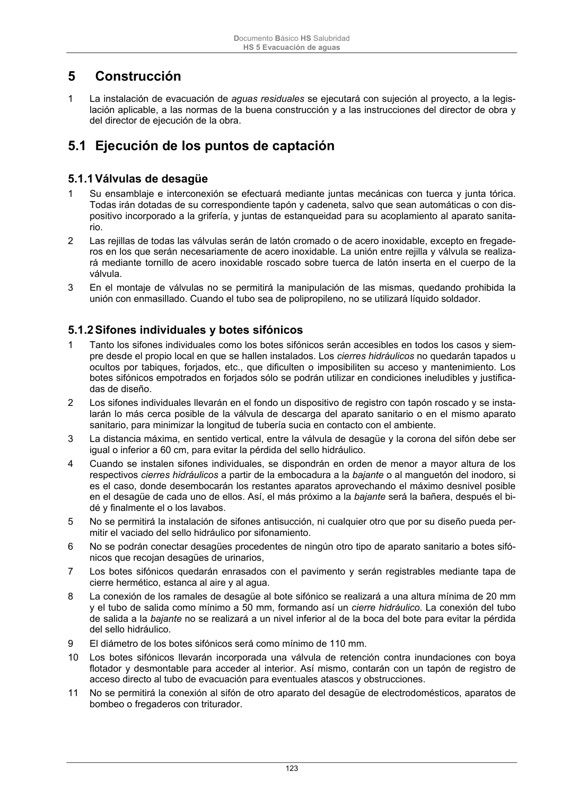

DB-HS · Página 123 · versión 2022-06-14
SHA256: 68df3caacc95f71aee2ec1ba7b2c65ae66155c21e3a8785521b8fdd4fd640d3b · página física 123 de 184 · métodos de encabezado
solo si están cotejados.
Documento · ← p. 122 · p. 124 →
Formatos: Markdown · JSON de bloques · PDF p. 123 · imagen PNG
Documento Básico HS Salubridad HS 5 Evacuación de aguas 123 5 Construcción 1 La instalación de evacuación de aguas residuales se ejecutará con sujeción al proyecto, a la legis- lación aplicable, a las normas de la buena construcción y a las instrucciones del director de obra y del director de ejecución de la obra. 5.1 Ejecución de los puntos de captación 5.1.1 Válvulas de desagüe 1 Su ensamblaje e interconexión se efectuará mediante juntas mecánicas con tuerca y junta tórica. Todas irán dotadas de su correspondiente tapón y cadeneta, salvo que sean automáticas o con dis- positivo incorporado a la grifería, y juntas de estanqueidad para su acoplamiento al aparato sanita- rio. 2 Las rejillas de todas las válvulas serán de latón cromado o de acero inoxidable, excepto en fregade- ros en los que serán necesariamente de acero inoxidable. La unión entre rejilla y válvula se realiza- rá mediante tornillo de acero inoxidable roscado sobre tuerca de latón inserta en el cuerpo de la válvula. 3 En el montaje de válvulas no se permitirá la manipulación de las mismas, quedando prohibida la unión con enmasillado. Cuando el tubo sea de polipropileno, no se utilizará líquido soldador. 5.1.2 Sifones individuales y botes sifónicos 1 Tanto los sifones individuales como los botes sifónicos serán accesibles en todos los casos y siem- pre desde el propio local en que se hallen instalados. Los cierres hidráulicos no quedarán tapados u ocultos por tabiques, forjados, etc., que dificulten o imposibiliten su acceso y mantenimiento. Los botes sifónicos empotrados en forjados sólo se podrán utilizar en condiciones ineludibles y justifica- das de diseño. 2 Los sifones individuales llevarán en el fondo un dispositivo de registro con tapón roscado y se insta- larán lo más cerca posible de la válvula de descarga del aparato sanitario o en el mismo aparato sanitario, para minimizar la longitud de tubería sucia en contacto con el ambiente. 3 La distancia máxima, en sentido vertical, entre la válvula de desagüe y la corona del sifón debe ser igual o inferior a 60 cm, para evitar la pérdida del sello hidráulico. 4 Cuando se instalen sifones individuales, se dispondrán en orden de menor a mayor altura de los respectivos cierres hidráulicos a partir de la embocadura a la bajante o al manguetón del inodoro, si es el caso, donde desembocarán los restantes aparatos aprovechando el máximo desnivel posible en el desagüe de cada uno de ellos. Así, el más próximo a la bajante será la bañera, después el bi- dé y finalmente el o los lavabos. 5 No se permitirá la instalación de sifones antisucción, ni cualquier otro que por su diseño pueda per- mitir el vaciado del sello hidráulico por sifonamiento. 6 No se podrán conectar desagües procedentes de ningún otro tipo de aparato sanitario a botes sifó- nicos que recojan desagües de urinarios, 7 Los botes sifónicos quedarán enrasados con el pavimento y serán registrables mediante tapa de cierre hermético, estanca al aire y al agua. 8 La conexión de los ramales de desagüe al bote sifónico se realizará a una altura mínima de 20 mm y el tubo de salida como mínimo a 50 mm, formando así un cierre hidráulico. La conexión del tubo de salida a la bajante no se realizará a un nivel inferior al de la boca del bote para evitar la pérdida del sello hidráulico. 9 El diámetro de los botes sifónicos será como mínimo de 110 mm. 10 Los botes sifónicos llevarán incorporada una válvula de retención contra inundaciones con boya flotador y desmontable para acceder al interior. Así mismo, contarán con un tapón de registro de acceso directo al tubo de evacuación para eventuales atascos y obstrucciones. 11 No se permitirá la conexión al sifón de otro aparato del desagüe de electrodomésticos, aparatos de bombeo o fregaderos con triturador.
